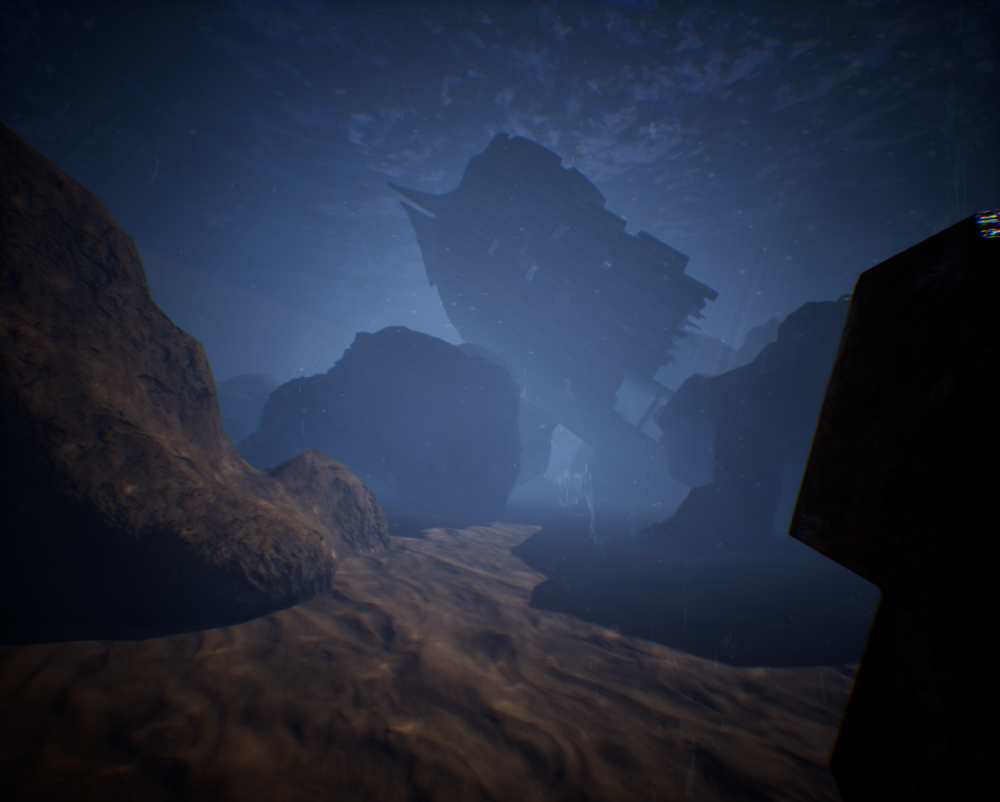
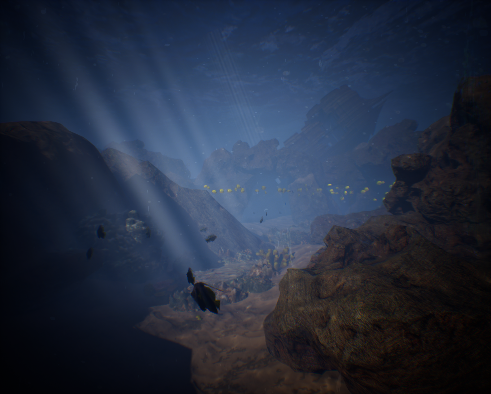
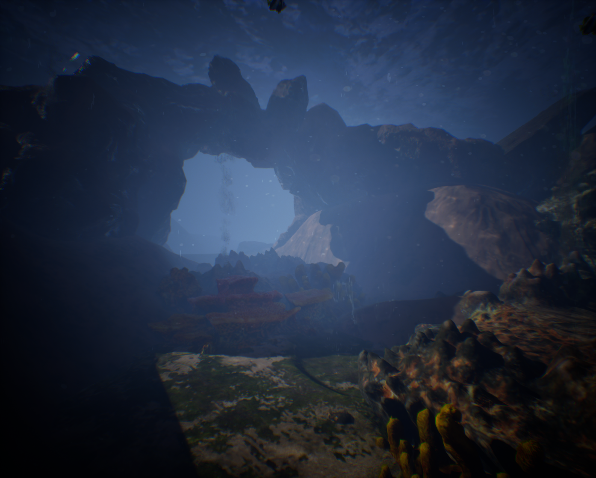
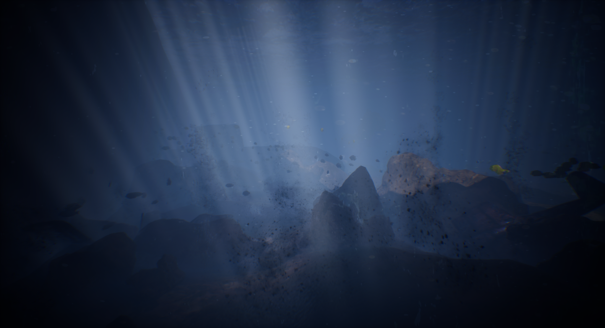
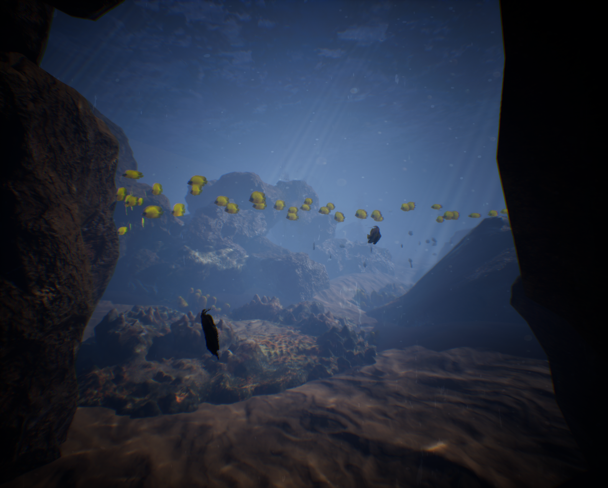

Create an experience that reads instantly in a public museum setting.
The interaction needed a strong visual identity from the first moment: an underwater world, recognizable marine life, and an environment that feels larger than the display itself.

North Carolina Aquariums · Museum Interactive
An immersive interactive shark game created for a museum setting, bringing a real-time underwater environment to guests through a public-facing digital experience.
The interaction needed a strong visual identity from the first moment: an underwater world, recognizable marine life, and an environment that feels larger than the display itself.
The project uses rocky underwater spaces, schools of fish, shafts of light, distant silhouettes, and environmental depth to give the experience a cinematic sense of scale while remaining readable on a museum display.
The finished work gives Tiny Trek Studio a public-facing example of how game development can extend beyond traditional entertainment into museum and exhibit experiences.
Production imagery from the underwater environment.



